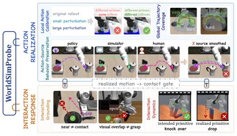
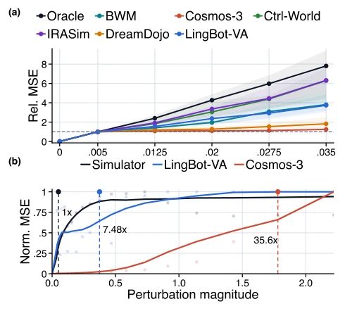
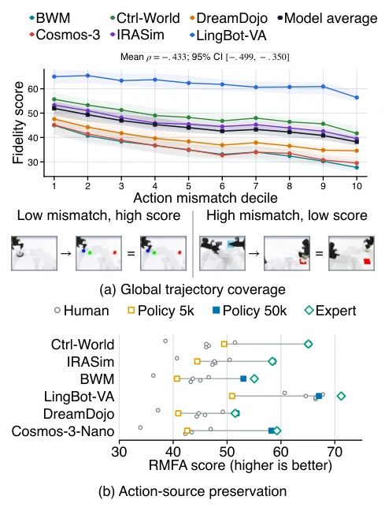
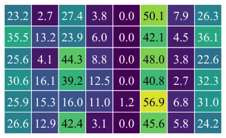
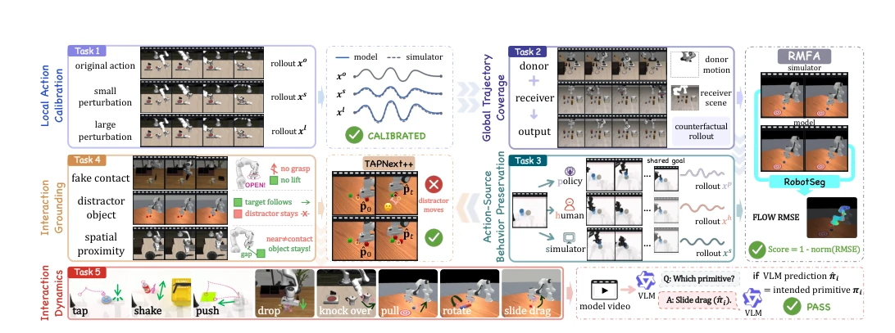

This paper delivers a dose of cold water to the ACWM community: do not merely judge based on video fidelity, but verify physical correctness. WorldSimProbe functions like a rigorous quality inspector, subjecting the model to repeated stress testing along the "action-motion-interaction" chain. Its highlight lies in fine-grained metrics capable of pinpointing whether errors stem from calibration or hallucination; its drawback is the continued reliance on simulators, requiring further verification for real-world deployment. Although termed "diagnosis," it essentially scores the simulator, given that ACWM itself is also a simulator. However, it is at least superior to superficial projects focusing solely on task success rates, revealing whether the model is "simulating" physics or truly "understanding" physics.
研究动机Motivation
ACWM 被寄予厚望，但现有评估太粗糙。WorldSimBench (Li et al. 2026a) 和 MiraBench (Yang et al. 2026) 多关注视觉质量或任务结果，忽略了动作执行的因果一致性。现有基准常评估 rollout 级响应，无法区分模型是“蒙对了”还是“真懂了”。例如，模型可能生成 plausible 的未来，但动作未引发对应运动，或交互无物理支撑。这导致下游策略训练时，合成数据虽成功但泛化差。需要一种能诊断“模拟器忠实度”的契约，而非仅看任务成败。
ACWM is held in high expectation, yet existing evaluations are too coarse. WorldSimBench (Li et al. 2026a) and MiraBench (Yang et al. 2026) primarily focus on visual quality or task outcomes, neglecting causal consistency in action execution. Existing benchmarks often evaluate rollout-level responses, failing to distinguish whether the model "guessed correctly" or "truly understands". For instance, a model may generate a plausible future, yet the action fails to induce corresponding motion, or the interaction lacks physical support. This results in downstream strategy training where synthetic data succeeds but generalization is poor. A contract capable of diagnosing "simulator fidelity" is needed, rather than merely observing task success or failure.

Figure 1: Overview of the simulator-faithfulness chain from supplied action to agent motion and environment response.
The core is the "Observable Simulator Contract," requiring actions to induce motion and motion to induce interaction. WorldSimProbe comprises five test suites: 1) Local action calibration, fine-tuning actions to check if response scaling is consistent; 2) Global trajectory coverage, cross-task replay to verify generalization; 3) Action source behavior preservation, comparing human/strategy trajectories; 4) Interaction grounding, detecting hallucinations during non-contact; 5) Interaction dynamics, using VLM to judge primitives such as push/pull/shake. Evaluation metrics include RMFA (optical flow alignment), VLM discrimination, and displacement detection. Through controlled intervention, faults are localized to specific links in the chain, rather than a single rollout score.

Figure 4: Action calibration and downstream failure onset. (a) Mean relative perturbation–response curves with 95% con- fidence intervals across 50 RoboTwin tasks; the horizontal dashed line marks the smallest nonzero perturbation base- line. (b) StackCube case study in ManiSkill; vertical dashed lines mark each simulator or model’s first persistent failure.
Evaluated 6 open-source ACWMs on RoboTwin, ManiSkill, and LIBERO, totaling 18,000 instances. It was found that models generally degrade in local calibration, while Ctrl-World performs better in interaction grounding, and LingBot-VA leads in calibration. In interaction dynamics, the "shake" action was almost entirely incorrect. Downstream strategy training verified score correlation: under OOD control, models with higher WorldSimProbe scores achieved significantly higher strategy success rates. This proves that coarse-grained evaluation masks key defects, and this benchmark can effectively predict synthetic data utility.

Figure 5: Action realization beyond local perturba- tions on RoboTwin. (a) fidelity across receiver–donor motion-mismatch deciles with representative low- and high-mismatch cases. (b) RMFA across human, policy- checkpoint, and expert trajectories.

Figure 6: Interaction-primitive fidelity, macro-averaged across RoboTwin, ManiSkill, and LIBERO. Values are per- centages; shading encodes magnitude.
其他图片Other Figures

Figure 3: Operational overview of WorldSimProbe. The five suites progress from local action calibration through global and source-specific action realization to interaction grounding and interaction dynamics, using suite-specific evaluators to localize failures along the simulator chain.